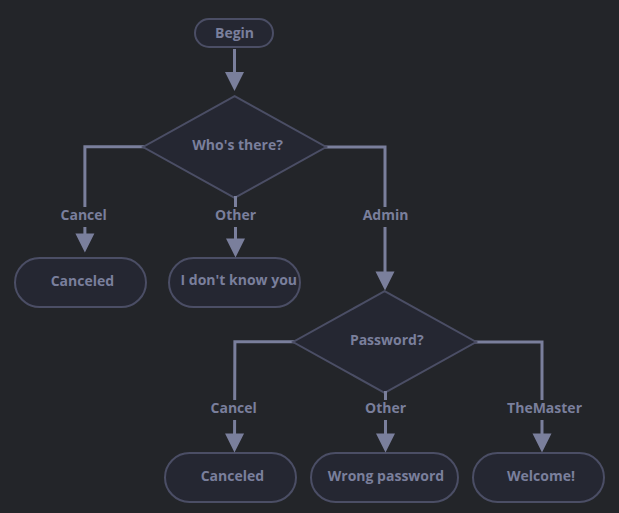
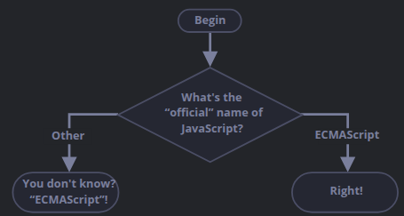

Every value in JavaScript always belongs to a certain type, like a string or a number. There are
eight different data types commonly used in JavaScript. Any value can be of any type in any variable
and can be changed at any moment.
// no error
let message = "hello";
message = 123456;
Programming languages, like JavaScript, are called "dynamically typed", meaning there exist data
types, but they are not bound to any of them.
Number
Number types represent both integer and floating point numbers. There are many operations for
numbers, such as multiplcation *, division /, addition +,
subtraction -, etc.
Outside of typical numbers, we also have "special numeric values" that represent particular values.
These include (but are not limited to) Infinity, -Infinity, and NaN.
Infinity is a value that represents the mathematical value of Infinity (∞).
It is a special value as it represents a value greater than any number. It can be achieved through
a division of zero:
alert( 1 / 0 ); // Infinity
Or it can be referenced directly:
alert( Infinity ); // Infinity
NaN represents the inability to calculate an expression, typically a computational
error. It is a result of incorrect or undefined mathematical operations:
alert( "not a number" / 2 ); // NaN, such division is erroreous
NaN is sticky. Any further mathematical operation on NaN will return
NaN:
alert( NaN + 1 ); // NaN
alert( 3 * NaN ); // NaN
alert( "not a number" / 2 - 1 ); // NaN
This also means should NaN appear anywhere in a mathematical expression, it will
expand through the whole result (the only exception being NaN ** 0
which results in 1).
Doing mathematical calculations in JavaScript is safe. It is possible to do any calculation:
divide by zero, treat non-numeric strings as numbers, etc. Scripts won't stop with a fatal error
("die"). The worst it can ever do is return NaN as the result.
Special numeric values formally belong in the "Numbers" category. Even though they do not have a
accurate or precise quantitative value, they still count as a number type.
BigInt
When JavaScript handles the number type, it can not safely represent values larger than 2⁵³-1
(that's 9007199254740991), or less than -2⁵³-1 for negatives.
While JavaScript is fully capable of storing large integers (up to 1.7976931348623157 * 10³⁰⁸),
it is much too large of a number to fit into the 64 bit storage. So it uses an approximate value
to that is as close to the correct value and will store that instead:
In most cases, ±(2⁵³-1 is a large range of numbers that covers most scenarios.
However, in some scenarios such as for cryptography or microsecond-precision timestamps, the
range isn't enough so a new type of data was added resulting in BigInt. To indicate
a number that large that should fall under BigInt, we add n at the end
of an integer.
// the "n" at the end means it's a BigInt
const bigInt = 1234567890123456789012345678901234567890n;
String
A string in JavaScript is defined a value in quotes:
let str = "Hello";
let str2 = 'Single quotes are ok too';
let phrase = `can embed another ${str}`;
There are three types of quotes used in JavaScript:
Double quotes: "Hello".
Single quotes: 'Hello'.
Backticks: `Hello`.
Double and single quotes fall under an umbrella term of "simple" quotes. There are hardly any
differences in the two. Backticks however are "extended functionality" quotes. They allow for
variables and expressions to be embedded into a string by wrapping them in ${...}.
let name = "John";
// embed a variable
alert( `Hello, ${name}!` ); // Hello, John!
// embed an expression
alert( `the result is ${1 + 2}` ); // the result is 3
The expression inside ${...} is evaluated and the result becomes a part
of the string. Anything could be placed inside, whether a variable like name or an
arithmetical expression like 1 + 2 or more complex. This function only works
with backticks as other quotes do not have this function.
alert( "the result is ${1 + 2}" ); //
In some programming languages, there is a special "character" type for a single character. An
example would be in C and in Java, this is called "char". However, this does not exist in
JavaScript as it has string. It can have zero characters, one character, or
many.
Boolean (logical type)
The boolean type has only two values: true and false. These two values
tend to correspond with yes/no answers: true meaning "yes, correct" and false
meaning "no, incorrect".
let nameFieldChecked = true; // yes, name field checked
let ageFieldChecked = false; // no, age field not checked
Boolean values also come as a result of comparisons:
let isGreater = 4 > 1;
alert( isGreater ) // true (the comparison result is "yes")
The "null" value
The value null is a unique value that does not to any of the previous types mentioned.
It is it's own individual type that only contains the null value:
let age = null;
null does not function as "reference to a non-existing object" or a "null pointer"
like in other languages. It is a unique value that represents "nothing", "empty", or "value unknown."
The "undefined" value
The value undefined is a standalone type that is similar to null. The
difference is the meaning of undefined represents "value is not assigned". Should we
have a variable declared but the value is not assigned, then the value undefined returns.
let age;
alert(age) // shows "undefined"
Although, it is possible to assign undefined to a variable, it's not advisted to do
so as we have null to represent "empty" or "value unknown". undefined
is a term that is specifically used as a default value for unassigned things.
Objects and Symbols
object is a special type. All other types are considered to be "primitive"
because their values can contain only a single entity (a string, number, or etc.).
However, object types are used to store collections of data and, sometimes, more
complex entities.
First we have the symbol type. This is used to create unique identifiers for objects.
This will be explained later, it is mentioned here now just to be aware of it's presence.
The typeof operator
typeof operator returns the type of the operand. It allows us to easily identify the
type of values and easily sort them differently, or even just to gander a check.
Math is a built-in object that provides mathematical operations.
The result of typeof null is "object". This is an officially
recognized error in typeof, stemming from the early days of JavaScript and is
kept for compatibility. null is not an object as it is a special value with a
type of its own.
∴ The behaviour of typeof is wrong here.
The returning result of typeof alert being function is because alert
is a function. There is no "function" type, but it falls under the object type. However,
typeof treats them different, resulting in "function. This also stems from
the early days of JavaScript. While such behaviours aren't correct, it being so is convenient in
practice.
There is also another syntax to be aware of: typeof (x). This is the same
as writing typeof x As a reminder, typeof is an operator, not a function.
The parantheses are not part of typeof. The common parantheses used, ( and ),
are the kind used for mathematical grouping. These typically have mathematical expressions inside, like
(2 + 2). Syntatically, writing the argument (x) is
allowed as it removes the space between the operator and the argument and some people prefer this.
∴ While some prefer writing typeof(x), writing typeof x is
just as common and share no difference.
Summary
8 Basic Data Types of JavaScript
Numbers. It also includes special number values such as:
Integers
Floating Point Numbers
Infinity, -Infinity
NaN
BigInt
String
Booleans true and false
null
undefined
symbol
object
typeof operator identifies the data type stored in a variable.
Used as typeof x but typeof (x) is also accepted.
Returns a string with the name of the object.
null returns as "object". This is due to an error in JavaScript, and
is not necessarily and object.
Lesson Overview
This lesson goes over the following:
Eight different data type names in JavaScript.
Understand the difference between single, double, and backtick quotes.
Embed a variable/expression in a string
Understand what a method is.
The three logical operators.
Understand what comparison operators are.
Understand what conditionals are.
Understand what nesting is.
Understand what truthy and falsy values are.
Odin Project on Strings
Strings
It is entirely possible to be handling with text blocks rather than a bunch of numbers. This depends
the field of work we are handling. Some examples of text blocks are strings, which are simply pieces of
text. These blocks end up being one of the building blocks of JavaScript.
A method is a bit of functionality built into the language or specific data types. In the previous
step, we are shown different methods that can be applied with strings, such as replace
and slice. Now, read through
MDN's documentation for strings
that provides an immense and detailed look into plenty more string methods. There is no need to
memorize all of them, but much of the document itself is important and should be used as a
reference in the future.
Words spoken in human languages are tools used as a means to effectively communciate with one
another. Each word used is to be used in a specific way to give us control on how to convey the
information we have to another. In coding, we have different languages that allow us to effictively
control how to present information. HTML is used to provide structure and meaning to text. CSS is
used to style it. JavaScript grants us features to manipulate strings. This includes welcome messages,
prompts, displaying ocrrect text labels, sorting items in a specific order, and so on.
Declaring strings
When dealing with strings at face value, they are treated very similarly to numbers. However, this is
only at the surface level. Just like numbers, we declare a variable, initialize it with a string
value, and return the value. The difference in the two is a string requires to be surrounded in quotes.
If this step is omitted or even a single quote is missing, an error is returned.
Bad examples
const badString1 = This is a test;
const badString2 = 'This is a test;
const badString3 = This is a test';
In the examples above, none of the lines work. Text that are not surrounded in quotes are taken
as variable names, property names, reserved words, or similar. Errors will pop up if the browser
does not recognize unquoted text. If the browser is unable to detect the end of string with closing
quotes or is missing a tick, it may return "unterminated string literal" error, or the console could
jump to a new line and expect us to finish the string from there. Be sure to check for missing quotes
should errors arise.
const badString = string;
console.log(badString)
Here we have declared the variable badString to be the same value as string.
Single quotes, double quotes, and backticks
JavaScript uses single quotes ('), double quotes ("), or backticks (`)
to wrap strings in.
Always use the same corresponding characters at the start of the string and at the end of the string.
const badQuotes = 'This is not allowed!"; // results in an error
Strings declared using single quotes and strings declared with double quotes are the same. Use whichever
you prefer, but remain consistent and use one only.
Strings declared using backticks are unique strings called "template literal". Template literals
behave almost identically to standard strings, but they have some special properties:
JavaScript can be embedded in them.
You can declare template literals over multiple lines.
Embedding JavaScript
Inside a template literal, JavaScript variables or expressions can be wrapped with ${...}
and whatever the result may be will be returned in the string:
const one = "Hello, ";
const two = "how are you?";
const joined = `${one}${two}`;
console.log(joined); // "Hello, how are you?"
As you already know, joining two or more strings together like so is called a concatenation.
Concatenation in context
Use this
as an example. A window.prompt() function is used, eliciting the user to
answer with a dialogue box. The text entered will then be saved and stored in a variable, in this
case, name. The window then displays a string that is imbedded into a generic greeting message.
Concatentation using "+"
${} can only be used with template literals and do not work with standard
strings. Normal strings are concatenated with the + operator.
JavaScript expressions can also be placed into template literals, like variables. The results will be returned:
const song = "Fight the Youth";
const score = 9;
const highestScore = 10;
const output = `I like the song ${song}. I gave it a score of ${ (score / highestScore) * 100
}%.`;
console.log(output); // "I like the song Fight the Youth. I gave it a score of 90%."
Multiline strings
Template literals respect line breaks in the source code, so writing strings that span multiple
lines look like this:
const newline = `One day you finally knew
what you had to do, and began,`;
console.log(newline)
/*
One day you finally knew
what you had to do, and began,
*/
In order to have the equivalent of a linebreak without using whitespace, use /n
in the string:
const newline = `One day you finally knew/nwhat you had to do, and began,`;
console.log(newline)
/*
One day you finally knew
what you had to do, and began,
*/
Including quotes in strings
Due to the fact that quotes are used to dictate the start and end of a string, they can't be used
to quote actual quotes:
const badQutoes = "She said "I think so!"";
To remedy this, we use different quotes for the string:
const goodQuotes1 = 'She said "I think so!"';
const goodQuotes2 = `She said "I'm not going in there!"`;
Another method is to "escape" the concerning the quotation marks. Escaping characters is to
do something to them in order to ensure they are recognized as text and not part of the code.
In order to achieve this in JavaScript we add a backslash \ just before the character:
const bigmouth = 'I\'ve got no right to take my place...';
console.log(bigmouth);
This technique can also be used to insert other special characters.
Numbers vs. strings
As we know, adding a string and a number results in a string concatenation:
How numbers are to be displayed as strings is explicitly defined, so the browser automatically
converts the number to a string and concatenates the two strings.
If we have a numeric variable that we want to covert into a string or string variable, or vice versa,
we can use two constructs:
Number() function converts anything applied to it into a number if possible:
These constructs are very useful in a variety of situations. With a significant amount of data
types available, it is crucial to be able to understand what type of data is being applied to what.
Just like in mathematics, like variables can only deal with like variables.
Summary of MDN's tutorial on Strings
Summary
Strings
To declare a string, be sure to start and end with the same identical quotes.
Single quotes: ''
Double quotes: ""
Backticks: ``. Strings with backticks are associated as template literals.
They can be used to embed JavaScript into them. They can also be declared over multiple lines.
JavaScript variables or expressions can be wrapped with %{} inside a
template literal. This only applies to template literals.
A template literal holding an expression can be placed inside a standard string.
Use \n as line break characters in a string.
To include quotes in a string, use a different set of quotes or add a backslash \
before the character. Such as 'I\'m still no good', 'Don\'t run away, etc.
The argument length returns the length of a string.
let text = "ABCDEFGHIJKLMNOPQRSTUVWXYZ";
let length = text.length; // Returns 26
Existing String Characters
There are 4 methods of extracting string characters:
at(position) Method
charAt(position) Method
charCodeAt(position) Method
Using property acces [ ] like in arrays
JavaScript String charAt()
charAt() returns the character at a specified index (position) in a string.
let text = "HELLO WORLD";
let char = text.charAt(0); // Returns the value H
JavaScript String charCodeAt()
charCodeAt() returns the UTF-16 value of the character at a specified index
in a string. Using this method returns a UTF-16 code* (an integer between 0 and 65535).
* - This is not be confused with HTML codes.
let text = "HELLO WORLD";
let char = text.charCodeAt(0) // Returns 72
JavaScript codePointAt()
codePointAt() returns the code point value. This is not to be confused with
charCodeAt().
let text = "HELLO WORLD";
let code = text.codePointAt(0); // Returns 72
While charCodeAt() returns a code that lies within the UTF-16 code point-centric,
codePointAt returns a Unicode code point-centric value. As result, the charCodeAt()
is used less and codePointAt() is used in modern coding.
JavaScript String at()
at() returns an indexed element from a string:
const name = "W3Schools";
let letter = name.at(2); // Returns S
Bracked notations [] return an indexed element from a string:
const name = "W3Schools";
let letter = name [2];
at() is a new method introduced to JavaScript in 2022. It not only functions
like charAt(), but it also the use of negative indexes whereas the former does
not. So we can use myString.at(-2) instead of charAt(myString.length-2).
So what does this mean? Essentially, they function the same: They both return the character at a
certain position in a string:
let name = "Emily";
let letter1 = name.at(2) // "i"
let letter2 = name[2] // "i"
JavaScript begins counting from 0, and so returns "i". However, they do have differences.
This is only apparent when the indexed element is negative or the position does not exist:
Negative index element
let name = "Emily";
name.at(-1); // "y", returns the last character
name[-1]; // undefined, function fails
∴ Applying at() to negative indexes counts characters from the end in reverse.
Out-of-range position
let name = "Emily";
name.at(10); // undefined
name[10] // undefined
[] is a method that has been around for a very long time. .at()
was brought forward later as is used today because:
It supports negative indexes, which counts characters in reverse from the end.
Provides more consistency as it has become a proper function and is not a shortcut.
Property Access [ ]
Property access is the action or function of "accessing" one of the string's positions (or "properties"),
by it's numbered position.
let text = "HELLO WORLD";
let char = text[0]; // Returns first character in the string, H
Note: Property access might be unpredictable:
Makes strings look like arrays (but they are not).
If no character is found, [] returns undefined, while char() returns
an empty string.
It is read only. str[0] = "A" gives no error when it does not work.
Example.
This function is the modern method of chartAt(). They both function the same,
but there is a crucial difference.
let name = "Emily";
name[10] // undefined
name.charAt(10); // "" (empty string)
Using [] returns undefined if the position does not exist. Whereas
charAt() returns an empty string ("").
JavaScript String concat()
concat() joins two or more strings:
let text1 = "Hello";
let text2 = "World";
let text3 = text1.concat(" ", text2) // returns "Hello World"
concat() method can be used instead of using the +
operator, but both function the same.
text = "Hello" + " " + "World!"; // "Hello World!"
text = "Hello".concat(" ", "World!"); // "Hello World!"
As a precaution, all string methods return new strings. They don't modify the original string.
As a result, the rule is:
Strings are immutable: Strings can not be changed, only replaced.
Extracting String Parts
There are three methods for extracting a part of a string:
slice(start, end)
substring(start, end)
substr(start, length)
JavaScript String slice ()
slice() extracts a portion of the string and returns the extracted portion
in a new string. This method requires two parameters: the start position, and end position
(the end position is not included). Do not forget JavaScript starts counting positions
from "0".
let text = "Apple, Banana, Kiwi";
let part = text.slice(7, 13); // Returns Banana
When the second parameter is omitted, all positions before the first parameter are sliced:
let text = "Apple, Banana, Kiwi"
let part = text.slice(7) // Returns Banana, Kiwi
If a parameter is negative, then the counter starts from the end:
let text == "Apple, Banana, Kiwi"
let part = text.slice(-12) // // Returns Banana, Kiwi
The following example has two negative parameters:
let text = "Apple, Banana, Kiwi"
let part = text.slice(-12, -6); // Returns Banana
JavaScript String substring()
substring() is similar to slice(), but the former
does not accept negative parameters. If there are negative values entered into substring(),
they will be treated as 0.
let str = "Apple, Banana, Kiwi"
let part = str.substring(7, 13); // Returns Banana
substring() will omit characters outside the selected first parameter if
there is no second parameter.
JavaScript String substr()
substr() is also similar to slice(). The difference here
is the second parameter designates the length of the extracted portion. This method is no longer
used or supported in the latest JavaScript standard. substring() and
slice() are now used instead.
let str = "Apple, Banana, Kiwi"
let part = str.substr(7, 6) // Returns Banana
Omittance of the second parameters will cause substr() to slice the rest of
the string.
let str = "Apple, Banana, Kiwi"
let part = str.substr(7); // Returns Banana, Kiwi
Like the previous methods, the position counts from the end if the element is negative.
let str = "Apple, Banana, Kiwi"
let part = str.substr(-4); // Returns Kiwi
Converting to Upper and Lower Case
A string is converted to upper case with toUpperCase(). To convert a string
to lower case, use toLowerCase().
JavaScript String toUpperCase()
let text1 = "Hello World!";
let text2 = text1.toUpperCase(); // Returns "HELLO WORLD!"
JavaScript String toLowerCase()
let text1 = "Hello World!";
let text2 = text1.toLowerCase(); // Returns "hello world!"
JavaScript String isWellFormed()
isWellFormed() is a function that returns booleans. It will return true
if the string is well formed, and false if not. A not well formed string is one that
contains lone surrogates (a Unicode surrogate code point taht is not part of a valid surrogate pair
used to represent characters in UTF-16 encoding).
Well Formed
let text = "Hello world!";
let result = text.isWellFormed() // Returns true
Not Well Formed
let text = "Hello World \uD800";
let result = text.isWellFormed() // Returns false
JavaScript String toWellFormed()
toWellFormed() is a method of returning new strings with all "lone surrogates"
being replaced with the Unicode replacement character (U+FFFD).
let text = "Hello World \uD800";
let result = text.toWellFormed() // Returns "Hello World �"
JavaScript trim
There three different trim methods:
.trim()
.trimStart()
.trimEnd()
JavaScript String trim()
trim() removes whitespace from both sides of a string:
let text1 = " Hello World! ";
let text2 = text1.trim() // Returns "Hello World!"
JavaScript String trimStart()
trimStart() is similar to trim, but removes whitespace in the beginning of
the string.
let text1 = " Hello World! ";
let text2 = text1.trimStart(); // Returns "Hello World! "
JavaScript string trimEnd()
trimEnd() removes whitespace in the end of a string.
let text1 = " Hello World!";
let text2 = text1.trimEnd(); // Returns " Hello World!"
JavaScript String Padding
Padding scripts were added via ECMA2017 so support two string methods in JavaScript: padStart()
and padEnd(). These two functions add padding to the start and end of a string.
These two functions are string methods, as such all numbers that require to be padded must be converted
into a string first.
JavaScript String padStart()
padStart() method adds padding at the start of a string. It pads a string
with another string (multiple times) until it reaches a given length.
Pad with "0" until reaching length 4:
let text = "5";
let padded = text.padStart(4,"0"); // Returns 0005
Pad with "x" until reaching length 4:
let text = "5";
let padded = text.padStart(4,"x"); // Returns xxx5
JavaScript String padEnd()
padEnd() pads a string at the end. It will pad the string at the end with
another string (multiple times) until reaching the set length.
Pad with "0" until reaching length 4:
let text = "5";
let padded = text.padEnd(4,"0"); // Returns 5000
Pad with "x" until reaching length 4:
let text = "5";
let padded = text.padEnd(4,"x"); // Returns 5xxx
JavaScript String repeat()
repeat() method has three properties in its function:
It returns a string with a number of copies of a string.
Returns a new string.
It does not change the original string.
let text = "Hello world!";
let result = text.repeat(2); // Returns Hello world!Hello world!
let text = "Hello world!";
let result = text.repeat(4); // Returns Hello world!Hello world!Hello world!Hello world!
The syntax is name.repeat(count). A parameter is required for the method to
work, the lowest being 0. If the parameter is set to "0", an empty string is returned "".
Replacing String Content
replace() method replaces a specified value with another value in a string:
let text = "Please visit Microsoft!";
let newText = text.replace("Microsoft", "W3Schools"); // Returns "Please visit W3Schools!"
replace() method:
Does not change the string it is called on.
Will return a new string.
Replaces only the first match.
let x = "Please visit Microsoft and Microsoft!";
let newText = text.replace("Microsoft", "W3Schools") // Returns "Please visit W3Schools and Microsoft!"
The parameters are also case sensitive:
let text = "Please visit Microsoft!"
let newText = text.replace("MICROSOFT", "W3Schools") // Fails
In order to make the method work regardless of cases, use a regular expression with an /i
flag. This will disregard case sensitivity. (Regular expressions are written without quotes).
let text = "Please visit Microsoft!";
let newText = text.replace(/MICROSOFT/i, "W3Schools"); // Returns "Please visit W3Schools!"
If we wish to replace all matches, use a regular expression with a /g
flag (global match):
let text = "Please visit Microsoft and Microsoft!";
let newText = text.replace(/Microsoft/g, "W3Schools!"); // Returns "Please visit W3Schools and W3Schools!"
Both the insenstive flag /i and global flag /g can be combined
in the parameters to disregard case sensitivity and replaces all found matches.
JavaScript String ReplaceAll()
replaceAll() method was introduced to JavaScript in 2017:
let text = "I love cats. Cats are very easy to love. Cats are very popular."
text = text.replaceAll("Cats","Dogs");
text = text.replaceAll("cats","dogs"); // Returns "I love dogs. Dogs are very easy to love. Dogs are very popular."
replaceAll() method enables us to target a regular expression instead of
a string to be replaced. If the parameter is a regular expression, be sure to include the global
flag /g or a TypeEroor is returned.
let text = "I love cats. Cats are very easy to love. Cats are very popular."
text = text.replaceAll(/Cats/g,"Dogs");
text = text.replaceAll(/cats/g,"dogs"); // ""
Converting a String to an Array
If we want to work with a string as an array, we can convert it into an array.
JavaScript String split()
A string can be converted into an array with the split() method (
link to example
):
text.split(","); // Split on commas
text.split(" "); // Split on spaces
text.split("|"); // Split on pipe
If the separator is omitted, the returned array will contain the wrong string in the index [0].
If the separator is "", then the returned array will be an array of single characters.
Link to example.
let text = "Hello";
text.split("") // Returns Hello but each character is line broken in between
As a note, this is a compilation of methods. You do not need to memorize them all but it is
useful to have bookmarked as a reference.
Strings are useful in the fact that they are able to hold values by using text. A common function
used is checking the length of a string using length() method. Another
common function is concatenation method using + and +=
operators. We can also check the type of data they are with indexOf(). We can
also extract substrings with substring().
Creating strings
Strings can be created as primitives, with string literals, or as objects, using the string()
operator.
const string1 = "A string primitive";
const string2 = 'Also a string primitive';
const string3 = `Yet another string primitive`;
const string4 = new String("A String Object"(;
String primitives and string objects share many properties but are separated by their differences
and caveats. More will be explained
below.
String literals are identified with the use of either single quotes '' or double
quotes "". The use of backticks `` are also string literals but are
more specifically a "template literal": a form that allows interpolation (embedding expressions
directly inside a string).
Character access
There are two methods to access an individual character in a string. The first method is with
the charAt() method:
"cat".charAt(1) // Returns value "a"
The other method treats the string as an array-like object, where individual characters correspond
to a numerical index:
"cat"[1] // Retuns value "a"
The square brackets [] are specifically used for character access. Any attempts
to delete or assign values to properties will fail.
Comparing strings
Use the lesser than operator < or the greater than > to compare
strings:
const a = "a";
const b = "b";
if (a < b) {
// true
console.log(`${a} is less than ${b}.`);
} else if (a > b) {
console.log(`${a} is greater than ${b}.`);
} else {
console.log(`${a} and ${b}.`);
Remember that all comparison operators, including === and ==
compare strings case-sensitively. A way to compare strings case-insensitively is by converting both
strings to the same case (whether upper or lower case) prior to comparing them.
function areEqualInsensitive(str1, str2) {
return str.toUpperCase() === str.toUpperCase()
}
Whether we change to lowercase toLowerCase or uppercase toUpperCase
does not really make too much of a difference in most scenarios concering the Latin alphabet.
The issues only begin to show when dealing with characters, or languages, outside the
English tongue.
The German lowercase letter ß> and ss> are both changed to
SS with toUpperCase().
Turkish alphabet has several characters that do not transform nicely with English letters.
For this particular situation, we can not use the standard case methods, but we have to use
toLocaleLowerCase("tr).
const areEqualInUpperCase = (str1, str2) =>
str1.toUpperCase() === str.toUpperCase();
const areEqualInLowerCase = (str1, str2) =>
str1.toLowerCase() === str.toUpperCase();
areEqualInUpperCase("ß", "ss"); // true; should be false
areEqualInLowerCase("ı", "I"); // false; should be true
As a result of the complications that arose from these conditions, the solution to comparing
case-insensitive equality was brought forward with Intl.Collator API or with
the string's localeCompare() method. They share the same interface and
both have sensitivity option set to either "accent" or "base".
An alternative method to localeCompare() is with strcmp().
They both allow sorting strings in locale-aware manners.
String primitives and String objects
JavaScript distinguishes between String objects and primitive string values as different
data type entities. (This also is true for Boolean and Numbers.)
String literals, as we mentioned earlier, are marked by the use of single or double quotes. String
literals and strings returned from using String in a non-constructor context (in verbatim,
are called without using the new keyword) are primitive strings. In situations when a
method is called upon a primitive string or when property lookups occur, JavaScript will automatically
wrap the string primitive and perform said function.
const strPrim = "foo"; // A literal is a string primitive
const strPrim2 = String(1) // Coerved into the string primitive "1"
const strPrim3 = String(true) // Coerced into the string primitive "true"
const strObj = new String(strPrim) // String with new returns a string wrapper object
console.log(typeof strPrim); // "string"
console.log(typeof strPrim2); // "string"
console.log(typeof strPrim3); // "string"
console.log(typeof strObj); // "object"
As a note, it is very rare we find ourselves using String as a constructor (the process
of making said string).
When eval() is used, string primitives and String objects will
return different results. Primitives used in eval are treated as source code while
String objects are treated as is and will return as the object.
const s1 = "2 + 2"; // creates a string primitive
const s2 = new String ("2 + 2"); // creates a String object
console.log(eval(s1)); // returns the number 4
console.log(eval(s2)); // returns the string "2 + 2"
The code can break due to these reasons when encountering String objects instead of a
primitive string.
A String object can awlays be converted to its primitive counterpart with the
valueOf() method.
console.log(eval(s2.valueOf())); // returns the number 4
String coercion
There is an abundance of built-in operations (methods) that use strings, and require their arguments
changed into strings prior to being called. As a result of this process, String objects
behave similarly to string primitives. This process prior to being called can be briefed as follows:
Strings are returned as-is.
undefined turns into "undefined".
null turns into "null".
true turns into "true"; false turns into "false".
Numbers are converted with the same algorithm as toString(10).
BigInts are converted with the same algorithm as toString(10).
Symbols return a TypeError.
Objects are converted into particular data types by a specific step-by-step process called a
"conversion chain" that sets the order and the fallback options:
Checks for a custom [Symbol.toPrimitive] method. This checks the object for
a particular set of rules to turn it into a primitive value.
If the first step fails, the next step is to call .toString().
If the second step fails, what follows is to call .valueOf().
Whatever primitive value comes back (string, number, boolean, etc.), JavaScript will then change
that (coerce) into a string.
There are also alternative methods of achieving very similar results in JavaScript:
Template literal: `%{x}` does exactly the steps explained above for
the embedded expression.
String() function: String(x) uses the same algorithm to
convert x, however Symbols do not return TypeError and instead
return "Symbol(description); description is simply a description
of the Symbol.
Conditionals
Here is where we begin to make things happen. Up to this point, we have not done much with programming
that could not be done with basic mathematical skills. We have only been telling the computer simply to
do calculations, but we teach the computer how to make decisions with conditionals. This makes the
computer more capable of doing a lot more tasks.
The first step in conditionals is having a good understanding of
comparisons.
JavaScript.info has
a good tutorial on logical operators.
Be warned when doing the tasks at the end: The questions that have the alert()
function will be covered in the future as well. Some answers may not make sense at the moment,
but they are accurate and will make sense as we progress through the course.
Read and take notes on
MDN's article on conditionals.
It will set a good foundation and has good examples of how to make use of conditionals when
building websites.
JavaScript.info goes over a
lesson on if/else.
Read over it as a review and do the tasks at the end.
There are variety of comparison operators from mathematics. Some we know are:
Greater/less than: a > b,a < b
Greater/less than or equals: a >= b, a <= b
Equals: a ==. As a note, double equality sign == stands
for the equality test, while a single equality sign = means an assignment.
Not equals: In mathematics, it is written as ≠, but in JavaScript it is written
as a != b.
This article will expand more on similar comparisons, how JavaScript makes them as well as important
peculiarities. By the end, you should have a good idea on how to avoid "JavaScript quirks" and related
issues.
Boolean is the result
Boolean comparison operators will return boolean values:
A comparison result can be assigned to a variable, just like any value:
let result = 5 > 4; // assign the result of the comparison
alert( result ); // true
String comparison
JavaScript uses a so-called "dictionary" or "lexicographical" to determine whether a string
is greater than another. However, these strings are compared letter-by-letter.
The method of comparing the two strings follows an algorithm that uses a simple process:
Compare the first character of both strings
If the first character is greater (or less) than the other string's, then the first string
is greater (or less than) the second. The process is finished.
If both strings' first characters are the same, we move to the next character in the string
and compare them the same way.
Repeat until the end of the string.
If both strings end at the same length, then they are equal. Otherwise, the longer string is
greater.
Going by the first example, 'Z' > 'A' reaches the result first at the first step.
Meanwhile, the second comparison requires more steps. 'Glow and 'Glee'
require us make more comparisons as strings are compared character-by-character:
G is the same as G.
l is the same as l.
o is greater than e. The process stops here as the first string is greater.
Comparison of different types
JavaScript will convert values of different types into numbers:
alert( '2' > 1 ); // true, string '2' becomes a number 2
alert( '01' == 1 ); // true, string '01' becomes a number 1
Boolean values true and false become values 1 and 0
respectively.
An awkward situation can appear that simultaneously:
Two values are equal.
One of them is true as a boolean and the other is false as a boolean.
let a = 0;
alert( Boolean (a) ); // false
let b = "0";
alert( Boolean (b) ); // true
alert(a == b); // true!
In the above example, there are several things to explain:
The alert function is called using a Boolean method using a as the argument. We know
a = 0 and as a result, when 0 is converted into Boolean with Boolean(),
it returns as false.
Here we have an assignment stating b = "0". The alert function called uses the
method Boolean() to convert b into a boolean. However, the rule is
any non-empty string is considered to be as "truthy". This means that any string, so long as it has
something or anything it, will have a boolean of true. Therefore, Boolean(b)
will return as true.
Here we have an alert function being called with the expression a == b. The
loose equality operator (==) is used to compare two entities of the same type.
We know a is equal to 0, a number, while b is equal to "0",
a string. The operator then converts "0" into a number, becoming 0. As
a result of this, the operator compares 0 == 0, which will return with true.
∴ Even though the boolean values are different, the loose comparison operator (==)
will convert the entities into the same type as they are, not as any other entity they will be.
Strict Equality
Loose equality is unable to differentiate 0 from false:
alert( 0 == false ); // true
The same also applies to empty strings:
alert( '' == false ); // true
This is a result that stems from operands of different types that are converted to numbers through
the loose equality operator (==). Empty strings are treated similarly to the
boolean false, and become a value of 0 through the loose equality operator.
To amend this, we use the strict equality operator (===) which checks
the equality without performing a type conversion. Should we have a scenario where a
and b variables are of different types, then performing a === b
will return a false value since there are no type conversions occuring.
alert( 0 === false ); // false, because the types are different
A "strict non-equality" operator (!==) operator exists as well that works
similarly to !=. The strict non-equality operator !==
compares both type and value whereas the singular non-equality operator != only
compares the values (but also converts that values types to a common type). The only drawback would be
the fact it takes more effort into writing, but it makes it clear and concise making it less prone
to errors and confusion.
Comparison with null and undefined
The values null and undefined behave in strange ways when we compare
them to other values.
For strict equality check, we use ===. This operator compares two values
by checking both value and type.
alert( null === undefined ); // false
The values of null and undefined are different as they are of different types.
For a non-strict check (also known as loose equality) check, the double equality operator (==)
is used.
alert( null == undefined ); // true
When we use the non-strict equality check on null and undefined, it
returns as true. The results from the early stages of JavaScript when both were
meant to represent "no value", but for different reasons:
null was meant to represent an intentional "empty" value (like: "there's nothing here")
undefined was meant to represent something that hasn't been assigned at all (like: "this is missing")
For mathematicals and other comparisons, we have >, <,
>= and <=.
When null and undefined are converted to numbers, null
becomes 0 and undefined becomes NaN. Be careful as these
properties have peculiar behaviours.
When we think from a mathematical perspective, this comes off as strange. The last statement
dictates null is "greater or equal to zero". This must mean one of the two statements
prior must be true, yet they are both false. This is because the equality check operator (==)
and comparisons (>, <, >=, <=)
operate differently. Comparisons will convert null into a number, treating is as
0. This explains why (3) null >= 0 is true and (1) null > 0
is false.
For statement (2), the loose equality check (==) does not perform any sort
of conversions. This results in both null and undefined equal to each
other but not anything else.
Comparisons (1) and (2) return as false because undefined is a
unique number type that gets converted to NaN that will always return false
for all comparisons.
The equality check for (3) returns false because as we mentioned earlier, undefined
will only equal to null and undefined only when using the non-strict
equality operator.
Avoid problems
While it is not necessary to remember all these unique traits by heart, these rules will become
second nature over time. However, there are some things to remember in order to avoid such issues:
Treat any comparison with undefined/null, excluding strict equality ===,
with great care.
Avoid using comparisons >, <, =>, =< with variables that could
be null or undefined unless you are absolutely sure of what you are doing.
If variables do have either of these values, check for them separately.
Summary
Comparison operators return a boolean value.
Strings are compared letter-by-letter in the "dictionary" order.
Values of different types will get converted into numbers when compared except when using the
strict equality check (===).
null and undefined are equal only to each other when using non-strict
equality check (==).
Take caution when using comparisons like > or < with variables
that could be null or undefined. It is also best to check for null
and undefined separetly.
?? (Nullish Coalescing). This will be focused on later.
These logical operators can be applied to values of any type and the result can be returned as
any type. They are not restricted to only boolean values.
|| (OR)
The operator "OR" is represented with the symbols of two vertical lines (|):
result = a || b;
In classical programming, the logical OR was meant to maniupulate boolean values only. If any of
its arguments were true, they would return as true, otherwise it would
have had returned as false. In JavaScript, the operator was made slightly more complex
but have greater functionality. Before digging into it, we will run with boolean values. There
are four possible logical combinations:
In the example provided, we see that the result is always true except when both
operands are false.
If any of the two operands are not booleans, it will be converted into a boolean for the evaluation.
As we went over before in comparisons, when converted into boolean values, the number 1
is treated as true whilst the number 0 is treated as false:
if (1 || 0) { // works just like if ( true || false)
alert( 'truthy!' );
}
Most of the time, OR || is used in if statements to test if
any given conditions are true:
let hour = 9;
if (hour < 10 ||hour > 18) {
alert( 'The office is closed.' );
}
More conditions can be placed:
let hour = 12;
let isWeekend = true;
if (hour < 10 || hour > 18 || isWeekend) {
alert( 'The office is closed.' ); // it is the isWeekend
}
OR "||" finds the first truthy value
The logic described previously are classical behaviours. Now we introduce the "extra" features
that JavaScript provides. In an extended algorithm and with multiple OR'ed values:
result = value1 || value2 || value3;
The OR || will do the following:
Evalutes operands from left to right.
Each separate operand is converted into a boolean. If the result is true, it stops
there and returns the original value of that operand.
If all operands have been evaluated and only returned as false, then it will return
the last operand.
A value is returned in its original form with any conversions. In a chain of OR ||,
it will return the first truthy value or the last value should no truthy value is found.
alert( 1 || 0 ); // 1 (1 is truthy)
alert( null || 1 ); // (1 is the first truthy value)
alert( null || 0 || 1); // 1 (the first truthy value)
alert( undefined || null || 0 ); // 0 (all falsy, returns last value)
What results is a peculiar usage of OR || compared to its classical counterpart.
Getting the first truthy value from a list of variables or expressions
let firstName = "";
let lastName = "";
let nickName = "SuperCoder";
alert( firstName || lastName || nickName || "Anonymous") // SuperCoder
Here we have three variables, firstName, lastName, and nickName.
These three viables can have assigned values, or they can remain undefined or even have falsy values.
So we use OR || here to display the one that has any important information.
Both firstName and lastName have values that are empty strings so they
are considered as falsy and given the false value.
The logical OR operator continues and since nickName is the only one assigned a value,
SuperCoder, the operator determines that nickName is truthy and will
stop there. This results in SuperCoder being shown in the alert.
Should nickName have remained unassigned, then the logical operator would determine
nickName as falsy and continued towards the last variable "Anonymous". With three
falsy variables, "Anonymous" would have then returned and popped up in the alert.
Short-circuit evaluation
An extra feature of the logical OR operator is the "short-circuit" evaluation. This feature makes
the operator process the arguments until it reaches the first truthy value. The value is then
returned immediately and will not process any other arguments that come after it. This becomes
a very useful aspect in determining if any operand is not a value but an expression with conditions
such as variable assignment or a function call.
In the first line, the first operand is true, which is considered to be truthy so
the OR logic operator stops there. However, the second line has two operands and the first one
is considered as falsy, so the operator continues to the second operand causing the alert to
be called.
This feature is used to execute commands only if the left operand is falsy.
&& (AND)
The AND operator is represented with two ampersands, &&.
result = a && b;
AND operator && will return a true value if both operands are
truthy. If any operands are considered to be falsy, the operator will return false.
let hour = 12;
let minute = 30;
if (hour == 12 && minute == 30) {
alert( 'The time is 12:30' );
}
Similar to the OR logical operator (||), any value is allowed as an operand
of AND:
if (1 && 0) { // evaluated as true && false
alert( "won't work, because the result is falsy" );
}
AND "&&" finds the first falsy value
If given multiple AND'ed values:
result = value1 && value2 && value3;
The AND operator && does the following:
Evalutes operands from left to right.
Each operand is converted into a a boolean. If the result is false, the operator
stops and returns the original value of that particular operand.
If all operands have been evaluated as "truthy", then the operator returns the last operand.
This means AND returns the first falsy value or the last value (operand) if none were found. The
AND operator && works very similarly to the OR operator ||.
The determining difference between the two operators is AND returns the first falsy value
and OR returns the first truthy value.
// if the first operand is truthy,
// AND returns the second operand:
alert( 1 && 0 ); // 0
alert( 1 && 5 ); // 5
// if the first operand is falsy,
// AND returns it. The second operand is ignored
alert( null && 5 ); // null
alert( 0 && "no matter what" ); // 0
The AND operator can also be used with more than two variables in a single line. The example
below returns the first falsy value:
alert( 1 && 2 && null && 3 ); // null
Only the last value is returned when all operands are truthy:
alert( 1 && 2 && 3 ); // 3, the last one is returned
Precendence of AND && is higher than OR ||
The AND logic operator && is higher in precendence than that of the OR logic
operator ||.
a && b || c && d
Here, the AND operator and OR operators are used, but it is essentially written as:
(a && b) || (c && d)
Don't replace if with || or &&
There are occasions where some developers use the AND operator && as a "shorter
way to write if". As an example:
let x = 1;
(x > 0) && alert( 'Greater than zero!' );
The function called in the latter part of && will only occur should the
evaluation ever get to that point. This means that it will only ever occur if the statement
(x > 0) remain true. This is analogous to:
let x = 1;
if (x > 0) alert( 'Greater than zero!' );
Though it appears to be much shorter when using the && method, using if
is much more clearer and coherent. To give meaning and use to all tools for their given purpose:
use && if we want to use AND, use if if we want if.
! (NOT)
The boolean NOT operator is represented with an exclamation sign !.
result = !value;
The operator accepts a single argument and:
Converts the operand to boolean type: true/false
Returns the inverse value
alert( !true ); // false
alert( !false ); // true
A double NOT !! is sometimes used to convert a value to a boolean type:
We have the first NOT used to convert our value into a boolean and also returning its inverse
value (false). The second NOT is used to inverse it once more, returning as true.
This gives us a simple value-to-boolean conversion.
An alternative method of doing so is using the Boolean method:
The NOT operator ! has the highest precendence of all operators. It will always
execute first.
Tasks
What's the result of OR?
What is the code below going to output?
alert( null || 2 || undefined );
Alert function called
OR logic operator comparing 3 variables, (null || 2 || undefined).
Returns first truthy variable.
First OR comparison: null
null converts to boolean values, treated as falsy or false.
OR logic continues from false
Second OR comparison: 2
2 converted to boolean values, treated as truthy.
Truthy reutrns true.
OR logic ends, returns 2.
OR logic ended with 2 returned, third comparison not executed.
∴ The code will output 2.
What's the result of OR'ed alerts?
What will the code below output?
alert( alert(1) || 2 || alert(3) );
Alert function called to expression: alert(1) || 2 || alert(3)
Expression in paranthesis needs to be evaluated first
First variable: alert(1)
Alert function called. Returns 1.
OR comparison between alert(1), 2, and alert(3) initiated.
First variable alert(1) conversion:
alert(1) converted to boolean. Treated as undefined.
undefined treated as falsy.
∴ alert(1) returns as false, OR logic continues.
Second variable 2 conversion:
2 converted to boolean.
Treated as truthy.
∴ 2 returns as true, OR logic ends.
Alert calls upon evaluated expression, returns 2.
∴ The code will alert twice. First alert will return 1. Second alert will
return 2.
What's the result of AND?
What is the code below going to show?
alert( 1 && null && 2 );
Alert function called to expression: 1 && null && 2
AND logic operator comparing 3 variables, 1, null, and 2.
First variable, 1, converted to boolean.
1 treated as truthy.
Returns true in conversion.
∴ 1 returns as true in boolean conversion. AND logic continues.
Second variable, null, converted to boolean.
null treated as falsy.
Returns false in conversion.
∴ null returns as false in boolean conversion. AND logic ends.
AND logic operator returns null.
Alert function returns null.
∴ The alert function will return null.
What is the result of AND'ed alerts?
What will this code show?
alert( alert(1) && alert(2) );
Alert function called to expression: ( alert(1) && alert(2) )
AND logic operator between alert(1) and alert(2).
Evaluate first operand, alert(1). Only calls the function, displays 1.
Convert first operand, alert(1) into boolean value.
alert(1) becomes undefined, treated as falsy.
Returns as false in conversion.
∴ alert(1) returns as undefined in boolean conversion and
is considered false in boolean values, thus ending AND logic.
AND logic operator returns undefined. Inner expression completes.
Outer function is called, alert(undefined), and displays undefined.
∴ The code will have two functions called. The first will have an alert, displaying 1
as the result from evaluating the first operand. The second function called will also have an
alert, displaying undefined.
The result of OR AND OR
What will the result be?
alert( null || 2 && 3 || 4 );
Alert function called to expression null || 2 && 3 || 4.
null || 2 && 3 || 4
&& has higher precedence over ||; 2 && 3 performs first.
2 && 3, finds and returns first falsy value. Both 2 and
3 return as truthy, so && will return final operand, 3.
Expression becomes null || 3 || 4
|| operator now begins on three operands, null, 3, and 4.
|| finds and returns first truthy value, going from left to right in expression.
null returns as falsy, continues to next operand.
3 returns as truthy. || logic ends and returns 3.
∴ Evaluated expression results in 3.
The alert function is called, displaying 3.
Check the range between
Write an if condition to check that age is between 14 and
90 inclusively.
"Inclusively" means that age can reach the edges of 14 and 90.
Write an if condition that checks age is:
Greater than and equal to 14:
age >= 14
Lesser than and equal to 90:
age <= 90
∴ age >= 14, age <= 90
Use && or ||?
Do I need both conditions to be true?
If yes, use ||.
If no, yes &&.
∴ Yes. Use ||.
Combine the written statements:
if, age >= 14, &&, age <= 90.
Insert into if condition:
if ( age >= 14 || age <= 90 )
if ( age >= 14 || age <= 90 )
Check the range outside
Write an if condition to check that age is NOT between 14 and 90
inclusively.
Create two variants: the first one using NOT !, the second one without it.
With NOT !
Write if condition that checks if age is NOT between 14
and 90 inclusively (14 and smaller, 90 and larger), using the NOT !
operator.
Age conditions are:
Inclusive of 14 and smaller:
age >= 14
Inclusive of 90 and larger:
age <= 90
∴ age >= 14, age <= 90.
Use && or ||?
Do I need both conditions to be true?
If yes, use ||.
If no, use &&.
∴ Yes. Use &&.
Combine the operands with operator logic:
age >= 14 && age <= 90
Apply NOT:
!( age >= 14 && age <= 90 )
Insert into if condition:
if ( !( age >= 14 && age <= 90 )
Without NOT !
Write if condition that checks if age is NOT between 14
and 90, inclusively (14 and smaller, 90 and larger).
Age conditions:
Smaller than 14:
age < 14
Larger than 90:
age > 90
∴ age < 14, age > 90
Use && or ||? Do both conditions need to be true or
is one enough?
If yes, use &&.
If no, use ||.
∴ No, use ||.
Combine the operands with operator logic:
age < 14 || age > 90
Insert into if condition:
if ( age < 14 || age > 90
With NOT !
if ( ! ( age >= 14 && age <= 90 ) )
Without NOT
if ( age < 14 || age > 90 )
A question about "if"
Which of these alerts are going to execute?
What will the results of the expressions be inside if(...)?
if (-1 || 0) alert( 'first' );
if (-1 && 0) alert( 'second' );
if (null || -1 && 1) alert( 'third' );
if ( -1 || 0 ) alert( 'first' );
OR || logic applied to operands -1 and 0. Returns first
truthy value, -1.
if ( -1 ) alert( 'first' );
if conditions are satisfied since -1 is considered a truthy value.
This calls on the alert function using the argument 'first'.
∴ The pop up alert will have 'first' in the box.
if ( -1 && 0 ) alert( 'second' );
AND && logic applied to operands -1 and 0.
Returns first falsy value, 0.
if ( 0 ) alert( 'second' );
if conditions are not satisfied since 0 is considered a falsey value.
As a result, the alert function is NOT called.
if ( null || -1 && 1 ) alert( 'third' );
AND && logic applied first to operands -1 and 1.
Returns first falsey value. Neither values are falsey and returns last operand, 1.
if ( null || 1 ) alert( 'third' );
OR || logic applied to operands null and 1.
Returns first truthy value, 1.
if ( 1 ) alert( 'third' );
Since if conditions are satisfied, alert function is called using the argument
'third'.
∴ The pop up alert will have 'third' in the box.
Check the login
Write the code which asks for a login with prompt.
If the visitor enters "Admin", then prompt for a password, if the input
is an empty line or Esc - show "Canceled", if it's another string - then show "I don't know you".
The password is checked as follows:
If it equals "TheMaster", then show "Welcome!",
Another string - show "Wrong password",
For an empty string or cancelled input, show "Canceled"

Please use nested if blocks. Mind the overall readability of the code.
Hint: passing an empty input to a prompt returns an empty string ''. Pressing ESC
during a prompt returns null.
Checking login step-by-step breakdown
Identify simplest sections. Look for parts of the chain that:
Do not depend on anything else - these are usually the simplest comparisons or values.
Have no branching - meaning no &&, ||, or nested
conditions yet.
Usually, these are the "bottom boxes" (leaf) in our tree/diagram.
Evaluate single expressions first.
For example:
Compare a number to a constant: age >G 14 → truthy/falsy
Simple variable check: name → truthy/falsy
These are easy and give us a definite boolean value.
Combine small pieces. One we are able to determine truthy/falsy results of the simplest boxes:
Tackle one logical operator at a time (&& or ||).
Use operator precedence to know which to do first.
Think: "If I know the left-hand side, what do I need to check next?"
Move upward. Gradually combine evaluated sections according to the diagram/tree. Each step becomes
much simpler as we already know the results of the smaller pieces.
Where to start
Look for "leaves". In a diagram of logical expressions:
A "leaf" is any single condition that does not depend on other logical operators.
Typically, these are atomic comparisons like:
age >= 14
age <= 90
score == 0
name truthy/falsy
How to pick the first one
Look at the bottom-most boxes in the diagram.
Identify one that doesn't feed into any other expression yet - it's evaluated directly.
Determine its truthy or falsy result based on the values given (or hypothetical values if none
are specified).
Why start here
Once you know the truthy/falsy result of the first leaf, you can plug it into the next
operator (&& or ||).
Then evaluate the next layer of the tree step by step.
This prevents you from getting lost in the full chain and keeps the logic manageable.
Bottom most leaf
We have a section that asks "Password?" and we have three possible results:
When no input ('') is entered OR the ESC key (null) is hit, the return
value is 'Canceled'.
When entering TheMaster, the return value is 'Welcome!'.
When entering any input besides TheMaster, the return value is 'Wrong password'.
In the first statement, we must use two strict equality operators === to
the variables null and '' because the operator has a higher precedence
than the OR logic operator ||.
Conditions can be set given certain scenarios. We have indicated that the first condition is when
null (ESC key) or '' (an empty field) is entered. If there was another
condition, we use else if. Since we have the password TheMaster that should
give us the return value 'Welcome!', else if can be used:
Now we have to set a condition for when any password that is not TheMaster is entered,
it returns as Wrong password. In this case, we use the keyword else to
cover any other input that is not null, '', or TheMaster:
This section, the top leaf, is a branch that has three results:
When no input ('') is entered OR the ESC key (null) is pressed, the
return value is 'Canceled'.
When entering 'Admin', we enter a second prompt for a password.
When entering any other except 'Admin', we get a return value of 'I don't know you'.
When writing the code, we have:
Canceled or ESC
if ( who === null || who === '' ) {
alert( 'Canceled' );
}
Correct User
if ( who === 'Admin' ) {
let password = prompt( 'Password?' );
}
Incorrect User
if !( who === 'Admin' ) {
alert( 'I don't know you' );
}
Just like in the bottom leaf, we can set conditions using keywords else if if
there are certain requirements to be met, and the keyword else for any other
conditions:
if ( who === null || who === '' ) {
alert( 'Canceled' );
} else if ( who === 'Admin' ) {
let password = prompt( 'Password?' );
} else {
alert( 'I don't know you' );
}
if ( who === null || who === '' ) {
alert( 'Canceled' );
} else if ( who === 'Admin' ) {
let password = prompt( 'Password?' );
} else {
alert( 'I don't know you' );
}
Insert the bottom leaf's code directly after the prompt from the first leaf:
if ( who === null || who === '' ) {
alert( 'Canceled' );
} else if ( who === 'Admin' ) {
let password = prompt( 'Password?' );
if ( password === null || password === '' ) {
alert( 'Canceled' );
} else if ( password === 'TheMaster' ) {
alert( 'Welcome!' );
} else {
alert( 'Wrong password' );
}
} else {
alert( 'I don't know you' );
}
Add in the prompt leading to the first leaf:
let who ( prompt( 'Who's there?' );
if ( who === null || who === '' ) {
alert( 'Canceled' );
} else if ( who === 'Admin' ) {
let password = prompt( 'Password?' );
if ( password === null || password === '' ) {
alert( 'Canceled' );
} else if ( password === 'TheMaster' ) {
alert( 'Welcome!' );
} else {
alert( 'Wrong password' );
}
} else {
alert( 'I don't know you' );
}
Answer
let who = prompt( 'Who's there?' );
if ( who === null || who === '' ) {
alert( 'Canceled' );
} else if ( who === 'Admin' ) {
let password = prompt('Password?');
if ( password === null || password === '' ) {
alert( 'Canceled' );
} else if ( password === 'TheMaster' ) {
alert( 'Welcome!' );
} else {
alert( 'Wrong password' );
}
} else {
alert( 'I don't know you' )
}
Notes
Do not forget that a single equality operator (=) is used as an assignment
operator.
When using the loose equality operator (==), do not forget it behaves quite
differently to the strict equality operator (===). This is more apparent
when comparing different types come into play. The loose equality operator will convert all values
into like types before executing any comparisons. So inputs of null and undefined
may be treated as "equal" because their "values" are the same. For example:
password == null
If our password was null, then it would also match with:
null
undefined
This is a result of how the loose equality operator works:
null == undefined // true
So as a result, we use the strict equality operator:
password === null // only true if *exactly* null
password === '' // only true if *exactly* empty string
As a result, the strict equality operator is more safe and more explicit.
When creating the condition for the wrong user or password, we used the keyword else
to state:
Anything that is not the correct (user or password relative to the leaf) AND is not cancel
should lead to '...'.
Originally, we had thought of using the NOT operator (!). However, because the
keyword else is used to determine all other results that do not fit into other conditions.
Although the intent and logic behind using NOT might make sense, it may not be as explicit as
using the keyword else.
With the use of any programming language, we can instruct our code to make decisions and carry
out tasks independently with given values. Some examples are:
When a player's lives reaches zero in a video game, then it is game over;
For a weather app, a sunrise image is shown when viewing it in the morning. Or;
A starry sky image when viewed at night.
You can have it on one condition!
Conditional statements are the representation of decisions that are made in JavaScript. These
conditionals can range from:choices that are made to the outcomes that stem from the results of
said choices.
Choices that are made. E.g, taking left path or right path.
Resulting outcomes based on the choices. E.g, Took the left path because it was shorter, or
took the right path because there were less hazards on the right.
if...else statements
The most basic type of conditional statement we will use in JavaScript is the if... else
statement.
Basic if...else syntax
An example:
if (condition) {
/+ code to run if condition is true -/
} else {
/+ run some other code instead -/
}
What we have written here:
The keyword if followed by parantheses.
A condition to test that is placed inside said parantheses. This condition utilizes the comparison
operators we have learned, and returns either true or false.
A set of curly parantheses that holds some code. The code can be anything we set it to be, and
will only run if the condition returns true.
The keyword else.
A set of curly brackets that also holds some code. This code can also be anything we set to it,
and will only run if the condition is not true - i.e. false.
The code from the example is quite clear and human-readable - In short, it says should the condition
return as true, run the first code else run the second code. Furthermore,
it is not absolutely necessary to include the else and the second block of code. The
following is also acceptable:
if (condition) {
/- code to run if condition is true -/
}
/- run some other code -/
If written in this manner, we have to be careful when doing it like so. The initial example had
set the condition with the keyword else to run the second code should the value from
the if condition return as not true - false. By removing
the keyword else from the second condition, the second code will execute but the issue
is it will always execute regardless if the value returned. When setting if conditionals,
you will often only want to run one set of code or the other, but not both.
We will sometimes see if..else statements written without curly brackets, but it
should be avoided:
if (condition) doSomething();
else doSomething();
While it is a set of valid code, it is easier to understand the code if we use curly brackets
to delimit (mark the boundaries) the block. In addition to delimiters, use multiple lines and
indentation.
A real example
To have a better understanding the use of the syntax, we will create a scenario. A child is asked
for help with a chore by their mother or father. They might say "Hey! If you can help me by going
and doing the shopping, I'll give you some extra allowance so you can afford that toy you wanted."
In JavaScript, that can be represented as:
let shoppingDone = false;
let childAllowance;
if (shoppingDone === true ) {
childAllowance = 10;
} else {
childAllowance = 5;
}
In the code, shoppingDone is a variable that always returns false resulting
in a disappointed child. We have to provide a mechanism for the parent, a code, to set the shoppingDone
variable to true if the child did the shopping.
else if
Earlier, we had made examples with two outcomes or examples. From here, we begin introducing how
to create more than two conditions.
If we want to link extra choices or outcomes to if...else, we will need to start
using else if. Every addtional choice requires an extra block to put
In order to add more choices or outcomes to if..else conditionals, we need to use
else if. More choices require an additional block to put in between if () {}
and else {}.
Link to example
HTML
<label for="weather">Select the weather type today: </label>
<select id="weather">
<option value="">--Make a choice--</option>
<option value="sunny">Sunny</option>
<option value="rainy">Rainy</option>
<option value="snowing">Snowing</option>
<option value="overcast">Overcast</option>
</select>
<p></p>
JS
const select = document.querySelector("select");
const para = document.querySelector("p");
select.addEventListener("change", setWeather);
function setWeather() {
const choice = select.value;
if (choice === "sunny") {
para.textContent =
"It is nice and sunny outside today. Wear shorts! Go to the beach, or the park, and get an ice cream.";
} else if (choice === "rainy") {
para.textContent =
"Rain is falling outside; take a rain coat and an umbrella, and don't stay out for too long.";
} else if (choice === "snowing") {
para.textContent =
"The snow is coming down — it is freezing! Best to stay in with a cup of hot chocolate, or go build a snowman.";
} else if (choice === "overcast") {
para.textContent =
"It isn't raining, but the sky is grey and gloomy; it could turn any minute, so take a rain coat just in case.";
} else {
para.textContent = "";
}
}
In order we have:
HTML element <select>. This is the an interactable window that allows users to
select or choose items that fit their needs. Commonly used for ages, titles, states/provinces, etc.
With the help of JavaScript, a reference to the <select> and <p>
elements are stored. By adding an event listener to the <select> element, the
value changes how the function setWeather() runs.
When function setWeather() is called, the <select> element
has the variable choice set with the value selected. With the use of a conditional
statement, different texts can be displayed depending on the selected value of choice.
Take note of how all conditions are tested in else if () {} with
the exception of the first which uses if () {}.
The final choice is determined with the statement else {}. This statement
is reserved as a final resort that determines how the code runs should none of the conditions
(from previous conditions) are true. In the example, the text is removed should the
user re-select the option "--Make a choice--".
A note on comparison operators
Comparison operators are used to test the conditions inside conditional statements. The choice
of comparison selectors are:
=== and !== - This tests whether a value is
identical to or not identical to another, respectively.
< and > - This tests whether a value is less than or greater
than a value, respectively.
<= and >= - This tests whether a value is equal to or
less than, or equal to or greather than another.
A common pattern that we will encounter is the testing boolean values, true and false.
Any value can return as true, but the following values will return as false
when tested as a conditional statement:
false
undefined
null
0
NaN
'' - an empty string.
Any variable name can be used to be tested whether it is considered to be true or
if it exists (meaning, it is not undefined).
For instance:
JS
let cheese = "Cheddar";
if (cheese) {
console.log("Yay! Cheese available for making cheese on toast.");
} else {
console.llg("No cheese on toast for you today.");
}
When we return back to our example previously with the child and his allowance, we can write this:
let shoppingDone = false;
let childAllowance;
// We don't need to explicitly specify 'shoppingDone === true'
if (shoppingDone) {
childAllowance = 10;
} else {
childAllowance = 5;
}
Nesting if...else
It is acceptable to place a if..else statement within another - in other words,
to nest them. If we go back to our weather example earlier, we can introduce the weather application
to more choices depending on the temperature:
if (choice === "sunny") {
if (temperature < 86) {
para.textContent = `It is %{temperature} degrees outside -
nice and sunny. Let's go out to the beach, or the park,
and get an ice cream.`;
} else if (temperature >= 86) {
para.textContent = `It is %{temperature} degrees outside -
If you want to go outside, make sure to put some sunscreen
on.`
}
}
Each if...else statement works completely independently of others, regardless if
they are part of another if...else statement or not.
Logical operators: AND, OR and NOT
Logical operators can be used when we need to test multiple conditions without having to nest
if...else statements. When used in conditionals:
&& - AND; allows us to chain multiple expressions so all of them must
individually evalute to true for the whole expression to return true.
|| - OR; allows us to chain multiple expressions so that one or more
must individually evaluate to true for the whole expression to return true.
To give an example of AND:
if (choice === "sunny" && temperature < 86) {
para.textContent = `It is %{temperature} degrees outside -
nice and sunny. Let's go out to the beach, or the park,
and get an ice cream.`;
} else if (choice === && temperature >= 86) {
para.textContent = `It is %{temperature} degrees outside -
REALLY HOT! If you wan tto goutside, make sure to put
some sunscreen on.`;
}
The first block of code only runs if choice === 'sunny'ANDtemperature < 86 return true.
Now an example of OR:
if (iceCreamVanOutside || houseStatus === "on fire") {
console.log("You should leave the house quickly.");
{ else }
console.log("Probably should just stay in then.");
}
The condition set is whether iceCreamVanOutside OR houseStatus
has a value of on fire return as true, will the code only then
be executed.
The final logical operator, NOT (!), is used to negate an expression. Using the
example from before:
if (!(iceCreamVanOutside || houseStatus === "on fire")) {
console.log("You should leave the house quickly.");
{ else }
console.log("Probably should just stay in then.");
}
In the written code, should the OR statement return as true, then the
NOT operator will deny it so the expression returns as false.
Multiple logical statements can be put together as many times as needed, regardless of how it is
introduced. The following scenario will only run should both OR statements return a
true. This also means that the AND statement will return true.
if ((x === 5 || y > 3 || z <= 10) && (loggedIn || userName === "Steve")) {
// run the code
}
A common misconception when using the logical operator OR in conditional statements
is believing that you can check one variable against several possible values by writing the variable
once, followed by listing values with the OR logical operator. Each comparison must be explicitly
include the variable. If only the values are written, those values are always considered truthy,
which return as true.
if (x === 5 || 7 || 10 || 20) {
// run my code
}
If x equals 5 OR 7 is true.
In the given scenario, the expression inside if () will always evaluate to be
true, since 7 (or any non-zero number) will evaluate to true.
The condition is rather stating, "If x equals 5 OR 7 is true". However this is not the intended
logic we had in mind. Instead we have to write it as:
if ( x === 5 || x === 7 || x === 10 || x === 20) {
// run my code
}
In this revision, what the if statement says now is, "If x equals 5, OR x equals 7,
OR x equals 10, OR x equals 20".
Another example:
if (x === "apple" || "banana" || "cherry" ) {
// some code
}
This code is saying: "If x equals "apple", OR "banana" is true, OR
"cherry" is true." Regardless of what value x could be
assigned with, the operands "banana" and "cherry" will return as
true. Since when converted to boolean values, any non-empty string will be considered
to be truthy - true. As a result, the if statement will always be
true and the code will always run. This is not the intended logic that was meant to be
utilized.
If we wish for our if to run as "If x equals "apple", OR x
equals "banana", OR x equals "cherry", then we have make it clear by being specific
and explicit. This is done by writing said statement as:
if (x === "apple" || x === "banana" || x === "chery" ) {
some code
}
switch statements
Even with all the conditionals we can use, if...else also has its own set of flaws.
if...else is good for cases when we have multiple choices, each one requiring its
own set of code, with the conditions being convoluted with the use of multiple logical operators.
This becomes quite annoying to deal with, especially if the goal of the statement is to set a variable
with a particular choice of value, or even print out a specific satement that varies on the condition.
This can make coding become a burdensome task, even more so when there is a large number of choices.
For such cases, the switch statements are available. switch takes a
single expression or value as input and looks through several choices until it finds one that
matches said value. It then executes the code tied with that choice. For instance:
switch (expression) {
case choice1:
// run this code
break;
case choice2:
// run this code instead
break;
// add in as many cases as necessary
default:
// actually, just run this code
break;
}
Here we have:
Keyword switch, followed by a pair of parantheses.
An expression or value inside the parantheses.
Keyword case, with the choice afterwards that is the result of what the expression
or value could be, proceeded with a colon.
Some code to be executed should the choice match the expression.
Keyword break, followed by a semicolon. If said value or expression matches the
choice provided, the browser stops executing the code block and moves on to any code that
appears below the switch statement.
As many different cases necessary (from steps 3 to 5).
Keyword default follows the same code pattern as any of the cases (steps 3 to 5),
but default does not have a choice that follows it. default also
does not require the break statement as there is no code to execute following this
block. It is also the default option that executes should none of the choices match.
A switch example
Here is an example where we will use the previous weather forecast application to use a
switch statement:
HTML
<label for="weather">Select the weather type today: </label>
<select id="weather">
<option value="">--Make a choice--</option>
<option value="sunny">Sunny</option>
<option value="rainy">Rainy</option>
<option value="snowing">Snowing</option>
<option value="overcast">Overcast</option>
</select>
<p></p>
JS
const select = document.querySelector("select");
const para = document.querySelector("p");
select.addEventListener("change", setWeather);
function setWeather() {
const choice = select.value;
swtich(choice) {
case "sunny":
para.textContent =
"It is nice and sunny outside today. Wear shorts!
Go to the beach, or the park, and get an ice cream.";
break;
case "rainy":
para.textContent =
"Rain is falling outside; take a rain coat and an
umbrella, and don't stay out for too long.";
break;
case "snowing" =
para.textContent =
"The snow is coming down - it is freezing! Best to
stay in with a cup of hot chocolate, or go build a
snowman.";
break;
case "overcast" =
para.textContent =
"It isn't raining, but the sky is grey and gloomy;
it could turn any minute, so take a rain coat just
in case.";
break;
default:
para.textContent = "";
}
}
View result code on MDN
Ternary operator
The ternary operator is a bit of code that tests conditions and returns a value or expression
if it is true, and an alternate result should it be false. This is
ideal for situations when you have two options because it is less code to write compared to
an if...else block. The code should look like so:
condition ? run this code : run this code instead
An example would be like so:
const greeting = isBirthday
? "Happy birthday Mrs. Smith - we hope you have a great day!"
: "Good morning Mrs. Smith.";
In this example, we have a variable isBirthday. Should the variable be true,
then the user will receive a happy birthday message. If it returns false, then the
user will receive a standard greeting.
Ternary operator example
The ternary operator is not only for setting variable values, it can also run functions or lines
of code. In the example below, it shows a simple theme chooser where the appropriate styling for
a website is applied using a ternary operator.
In the example above, we have <select> element that lets the user choose a
theme of black or white. In JavaScript, we have written an update() function
that takes two different colours as parameters (inputs). The website's background colour is set
to the first provided colour, and the colour of the text is set to the second provided colour.
Later, we come across the change event listener that gives instruction to execute a
function containing the ternary operator. This starts at select.value === "black".
The statement is saying "Should this value be true, run the designated code." The
value true is designated by the symbol ?, followed by some code. Its
counterpart, the false branch, is represented by the symbol : with some
code afterwards. When we have selected "Black" from select, the value becomes
true and executes the code designated in the true branch. The update()
function is called, changing our background colour to black and our text colour to white. Should
the value selected been "White" (false), the false branch will execute
it's condition changing the background colour to white and text colour to black.
In order to bring about a calendar, we require three things in our code:
<select> element to allow the user to choose between different months.
A change event handler to detect when a value selected in the <select>
menu changes.
The function createCalendar() that creates the calendar and displays the
correct month within the h1 element.
In order to accomplish this scenario:
Click "Play" in the code block provided in the
MDN Playground.
Write the conditional statement inside createCalendar() function, below the
// ADD CONDITIONAL HERE comment. It should:
View the selected month (stored in the choice variable. This will be the <select>
element value after the value changes, "January" for example).
Assign a days variable equal to the number of days in the selected month. This will
require us to look up the number of days in each month of the year.
Hints:
The OR logical operator is the preferred choice here to group multiple months together into a
single condition as many of them will share the same number of days.
Think about which number of days is the most common, and use that as the default value.
This task will require us to make use of the ternary operator that we had gone over previously.
In addition, the ternary operator will need to be converted into a switch statement that allows
us to apply more choices to the website. When we look at <select>, there are
five theme choices to go around.
To complete the example:
Click "Play" in the code block on MDN's article so we can make edits in the MDN Playground.
Add a switch statement just underneath the // ADD SWITCH STATEMENT comment:
It should accept the choice variable as its input expression.
For each case, the choice should equal one of the possible <option> values
that can be selected, that is, white, black, purple,
yellow, or pyschedelic. Note that the option values are lowercase,
while the option labels, as displayed in the live output, are capitalized. You should
use the lowercase values in your code.
For each case, the update() function should be run, and be passed two colour
values, the first one for the background colour, and the second one for the text colour. Remember
that colour values are strings, so they need to be wrapped in quotes.
Note:
There is no ternary operator in the example. Just write the switch statements.
The conditional operator ? is used in tandem with if statements to
undertake different actions that have different conditions.
The "if" statement
if(...) statement evaluates the condition inside the parantheses. Should the
result be true, it will execute a block of code.
let year = prompt('In which year was ECMAScript-2015 specification publish?','');
if (year == 2015) alert( 'You are right!' );
The example provided is a loose equality check (year == 2015), but is capable
of handling more complex conditions. With the use of curly brackets, multiple statements can be
executed.
if (year == 2015) {
alert( "That's correct!" );
alert( "You're so smart!" );
}
It is recommend to use curly brackets {} with the use of every if
statement. This is to ensure clarity and improve readability.
Boolean conversion
if statements evaluate the expressions inside the parantheses and will convert the
result to a boolean. There are a set of conversion rules to follow:
A number 0, an empty string "", null, undefined,
and NaN all become false. These are called "falsy" values.
Any other value are considered to be true, as such are called "truthy".
Here is an example of a statement that is falsy and will never execute:
if (0) { // 0 is falsy
...
}
This one will execute:
if (1) { // 1 is truthy
...
}
Expressions that have been evaluated can also be used in if statements:
let cond = (year == 2015) // equality evaluates to true or false
if (cond) {
...
}
The "else" clause
When the if statement returns as false, code can be executed with the
conditional keyword else:
let year = prompt('In which year was the ECMAScript-2015 specification published?', '');
if (year < 2015) {
alert( 'Too early...' );
} else if (year > 2015) {
alert( 'Too late...' );
} else {
alert( 'Exactly!' );
}
The statement will first check year < 2015. If it is falsy, it will continue to the
next condition year > 2015. If this also is falsy, it shows the last alert,
alert. Though not shown, more else if blocks can be written and the
final conditional else is optional.
Conditional operator '?'
On occasion, it is necesary to assign a variable depending on a condition:
let acessAllowed;
let age = prompt('How old are you?','');
if (age > 18) {
accessAllowed = true;
} else {
accessAllowed = false;
}
alert(accessAllowed)
The conditional operator ? (sometimes called the "question mark" operator) enables
us to do so in a shorter and simpler way. It is also sometimes referred to as "ternary" because
it has three operands and is the only operator to have that number of. The syntax follows as:
let result = condition ? value1 : value2;
The condition is evaluated. If is truthy, value1 is returned. If falsy, then
value2 is returned.
let accessAllowed = (age > 18) ? true : false;
In this scenario, we could write the statement without the parantheses surrounding age > 18
based on a technicality. The conditional operator ? has a low precedence. As
a result, it executes after the comparison operator >. As such it can be written as:
// the comparison operator "age > 18" executes first anyway
// (no need to wrap it into parantheses)
let accessAllowed = age > 18 ? true : false;
However, it is better to include the parantheses for readability and clarity.
Note:
In the example above, the conditional operator ? does not need to be included
as the comparison itself returns true/false:
// the same
let accessAllowed = age > 18;
Multiple '?'
A repititve use of the conditional operator ? can return values that depend on
multiple conditions:
let age = prompt('age?', 18);
let message = (age < 3) ? 'Hi, baby!' :
(age < 18) ? 'Hello!' :
(age < 100) ? 'Greetings!' :
'What an unusual age!';
It will appear confusing at first glance, however the statement is simply a successive set of
tests:
First conditional operator checks whether age < 3.
If true - returns 'Hi, baby!'. If not, the condition continues to the
next expression after the colon operator : (also known as the else operator),
and checks age < 18.
If true - returns 'Hello!'. If not, the condition continues to the next expression
after the else operator :, checking age < 100.
If true -returns 'Greetings!'. If not, the condition continues to the expression that
follows after the else operator : returning 'What an unusual age!'.
If written with if...else, it looks like:
if (age < 3) {
message = 'Hi, baby!';
} else if (age < 18) {
message = 'Hello!';
} else if (age < 100) {
message = 'Greetings!';
} else {
message = 'What an unusual age!';
}
Non-traditional use of '?'
The conditional operator ? can be used to replace if:
let company = prompt('Which company created JavaScript?','');
(company == 'Netscape') ?
alert('Right!') : alert('Wrong.');
The first or second expression that follows after the conditional operator ?
gets executed will vary depending on the condition of company == 'Netscape'.
A result is not assigned to variable but will execute different code that depends on the condition.
However, avoid using the conditional operator in this manner. While the syntax allows for it to
be written succinctly, it makes the code to be less readable and clear. The equivalent code when
using if looks like this:
let company = prompt('Which company created JavaScript?','');
if (company == 'Netscape') {
alert('Right!');
} else {
alert('Wrong.');
}
It is much easier to read code that spans vertically, rather than a vastly long horizontal
condition. The purpose of the conditional operator ? is to return a single
value or another depending on the conditions set. Specifically keep it for this exact purpose.
Stick to using if should we need to execute different branches of code.
Tasks
if (a string with zero)
Will alert be shown?
if ("0") {
alert( 'Hello' );
}
Yes. Unless we use a strict equality operator ===, any non-empty string
is considered truthy, becoming true.
The name of JavaScript
Using the if...else construct, write the code which asks: 'What is the "offical"
name of JavaScript?'
If the visitor enteres "ECMAScript", then output "Right!", otherwise - output:
"You don't know? ECMAScript!"

let name = prompt('What is the "official" name of JavaScript?','');
if (name === "ECMAScript") {
alert('Right!');
} else {
alert('You don't know? ECMAScript!')
}
Show the sign
Using if...else, write the code which gets a number via prompt and then
shows in alert:
1, if the value is greater than zero.
-1, if the value is less than zero.
0, if equals zero.
In this task, we assume that the input is always a number.
let value = prompt('Value?','');
if (value > 0) {
alert( 1 );
} else if (value < 0) {
alert( -1 );
} else {
alert( 0 );
}
Rewrite 'if' into '?'
Rewrite this if using the conditional operator ?:
let result;
if (a + b < 4) {
result = 'Below';
} else {
result = 'Over';
}
let result = (a + b < 4) ? 'Below' : 'Over';
Rewrite 'if...else' into '?'
Rewrite if...else using multiple ternary operators ?.
For readability, it is recommended to split the code into multiple lines.
let message;
if (login == 'Employee') {
message = 'Hello';
} else if (login == 'Director') {
message = 'Greetings';
} else if (login == '') {
message = 'No login';
} else {
message = '';
}
Instead of writing multiple if checks, a switch statement in its place.
This method provides a more "detailed" description in comparing a value to multiple variants.
The syntax
The switch statement has one or multiple case blocks plus an optional
default.
switch(x) {
case 'value1': // if (x === 'value1')
...
[break]
case 'value2': // if (x === 'value2')
...
[break]
default:
...
[break]
The value of x is checked with strict equality and compared to the value from the
first case (in this moment, value1). If the strict equality comes falsy,
the code goes on to the next case check.
If equality is found, switch begins executing the code from the corresponding case
until the first break is reached (or until the end of switch).
If there is no strict equality found between each case, then default
code is executed should it exist.
An example
let a = 2 + 2;
switch (a) {
case 3:
alert( 'Too small' );
break;
case 4:
alert( 'Exactly!' );
break;
case 5:
alert( 'Too big' );
break;
default:
alert( "I don't know such values" );
}
switch first begins to compare a with the first case variant,
which is 3. The statement is proven falsy, and switch continues to the
next case.
case 4 is checked and is proven truthy - true. The code that corresponds
with case 4 is executed until reaching break.
Should no break be found, then the code executes onto the next case
without performing any checks.
An example without break:
let a = 2 + 2;
switch (a) {
case 3:
alert( 'Too small' );
case 4:
alert( 'Exactly!' );
case 5:
alert( 'Too big' );
default:
alert( "I don't know such values" );
}
In the scenario provided, once the check in case 4 is completed and begins executing
it's code, the following alerts will also trigger. In short, this means not only
will alert( 'Exactly!') be triggered, but alert( 'Too big')
and alert( "I don't know such values" ) will also be called.
Both switch and case also allow arbitrary expressions.
let a = "1";
let b = 0;
switch (+a) {
case b + 1:
alert("this runs, because +a is 1, exactly equals b+1");
break;
default:
alert("this doesn't run");
}
The expression +a is a numeric conversion with the unary operator +.
As a result, we get a value of 1. This new value is then compared to case b + 1
and will return truthy because b + 1 is also 1. The code then executes
until it reaches break.
Grouping of "case"
If there are multiple case that share the same code, they can be grouped:
let a = 3;
switch (a) {
case 4:
alert('Right!');
break;
case 3: // (*)grouped two cases
case 5:
alert('Wrong!');
alert("Why don't you take a math class?");
break;
default:
alert('The result is strange. Really.');
}
With cases 3 and 5 grouped, they will now both execute the same code.
This method of "grouping" cases is one of the consequences of how switch/case
functions without using break. The execution of case 3 begins from
where we had marked it ((*)), and goes through case 5 since
there is no break.
Type matters
Do not forget that eqaulity check is always strict. Values must be of the same type in order for
it to be a true strict equality.
let arg = prompt("Enter a value?");
switch (arg) {
case '0':
case '1':
alert( 'One or zero');
break;
case '2':
alert( 'Two' );
break;
case 3:
alert( 'Never executes!' );
break;
default:
alert( 'An unknown value' );
}
0 and 1 will cause case '0' and case '1'
to trigger, calling alert.
2 triggers the second code, calling the alert.
prompt() always receives entered values as a string. When we enter 3 into
the prompt, we are entering "3". This does not match case 3 because
3 from case is not strictly equal to the string "3" that
was received from the prompt. As such, case 3 does not pass as truthy and swith
will then move to default.
Tasks
Rewrite the "switch" into an "if"
Write the code using if...else which would correspond to the following switch:
switch (browser) {
case 'Edge':
alert( "You've got the Edge!" );
break;
case 'Chrome':
case 'Firefox':
case 'Safari':
case 'Opera':
alert( 'Okay we support these browsers too' )
break;
default:
alert( 'We hope this page looks ok!' )
}
My answer
let browser;
if (
browser === 'Chrome' ||
browser === 'Firefox' ||
browser === 'Safari' ||
browser === 'Opera'
) {
alert( 'Okay we support these browsers too' );
} else if (
browser === 'Edge'
) {
alert( "You've got the Edge!" );
} else {
alert( 'We hope this page looks ok!' );
JavaScript.info Answer
if (browser === 'Edge') {
alert("You've got the Edge!");
} else if (browser === 'Chrome' ||
browser === 'Firefox' ||
browser === 'Safari' ||
browser === 'Opera') {
alert( 'Okay we support these browsers too' );
{ else }
alert( 'We hope this page looks ok!' );
}
Rewrite "if" into "switch"
Rewrite the code below using a isngle switch statement:
let a = +prompt('a?','');
if (a == 0) {
alert( 0 );
}
if (a == 1) {
alert( 1 );
}
if (a == 2 || a || 3) {
alert( '2,3' );
let a = +prompt('a?','');
switch(a) {
case 0:
alert( 0 );
break;
case 1:
alert( 1 );
break;
case 2 :
case 3 :
alert( '2,3' );
break;
}
While break is not an absolute requirement at the end, it is added in the scenarios
should we add more cases. Given the situation we would add a case 4,
the missing break from case 3 will cause an error. As good practice,
do add break at the end.